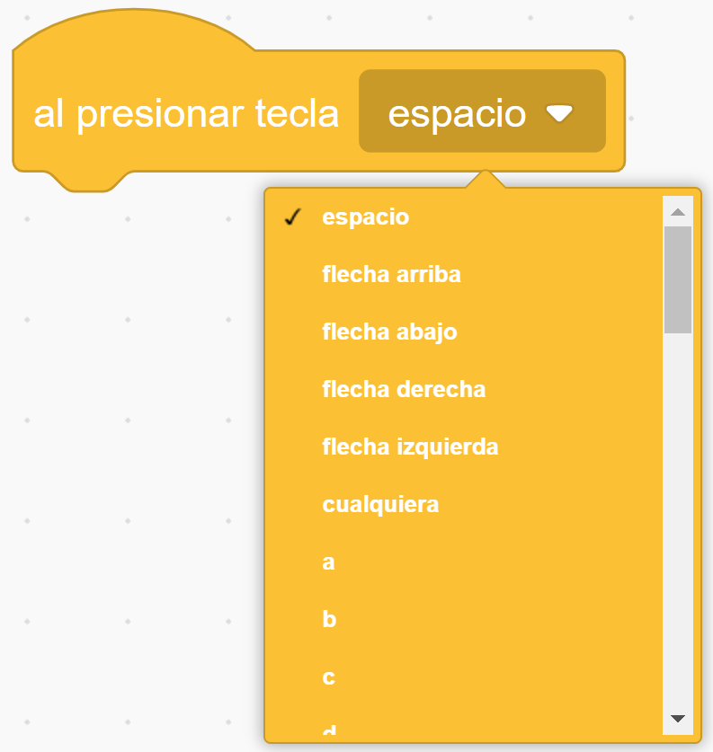

Ya hemos aprendido a utilizar el evento BANDERA de Scratch, pero existen otros tipos de eventos que pueden resultar muy útiles para nuestros proyectos.
Dos eventos muy utilizados en Scratch son el evento AL PRESIONAR TECLA y el evento AL HACER CLIC EN ESTE OBJETO.
|  |
Los scripts colocados debajo de este bloque se activarán cuando se pulse la tecla especificada. Las teclas que se pueden detectar con este bloque incluyen todo el alfabeto inglés (a b c, etc.), las teclas numéricas ( 0 1 2, etc.), las teclas de dirección ( ← ↑ → ↓ ) y la tecla de espacio. Tras una actualización, este bloque incluye ahora una opción cualquiera, que permite pulsar cualquier tecla para accionar el bloque. |
|
Los scripts que usan este bloque se activarán cuando se haga clic en su sprite o en un clon del mismo. Contrariamente a su nombre definitivo, el bloque también ejecutará el script del clon cuando se haga clic en él. Hacer clic en áreas transparentes del sprite (objeto) no desencadena este evento, excepto para las áreas transparentes rodeadas mediante el uso de las herramientas rectángulo hueco y óvalo en el editor de mapas de bits. |